Chapter 2. 데이터베이스 관리 시스템(DBMS)¶
0절. DBS 구조
1절. DBMS 등장 배경
2절. DBMS 정의
3절. 파일 시스템 vs DBMS
4절. DBMS 기능
5절. 데이터 모델
6절. 데이터베이스 관리 시스템 발전 과정
0절. DBS 구조¶
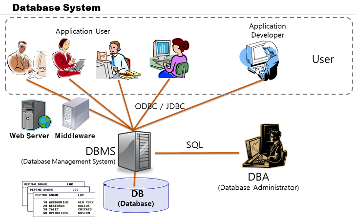
| 종류 | 설명 |
|---|---|
| JDBC (Java Database Connectivity) |
자바에서 데이터베이스에 접근할 수 있도록 하는 자바 API |
| ODBC (Open Database Connectivity) |
마이크로소프트가 만든 데이터베이스에 접근하기 위한 소프트웨어 표준 규격 |
1절. DBMS 등장 배경¶
파일 시스템(File System)¶
- 데이터를 파일로 관리하기 위한 시스템
- 파일 생성·삭제·수정·검색 기능을 제공하는 소프트웨어
- 응용 프로그램마다 필요한 데이터 별도 관리
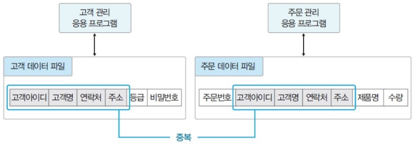
파일 시스템 문제점¶
데이터 중복성¶
- 같은 내용 데이터가 여러 파일에 중복 저장
- 저장 공간 낭비, 데이터 일관성·무결성 유지에 어려움
- ex) 여러 파일 중 한 파일의 속성만 수정할 경우 일관성 불일치
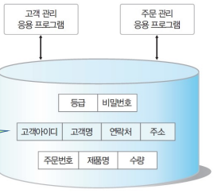
데이터 종속성¶
- 응용 프로그램이 데이터 파일에 종속적
- 데이터 구성 방법·물리적인 저장 구조에 맞는 저장 필요
- 사용하는 파일의 구조 변경 시 응용 프로그램도 함께 변경
- ex) 두 고객 파일 처리 시 다른 방식으로 처리
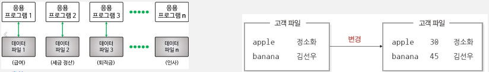
동시 공유·보안·회복 기능¶
- 데이터 파일 동시 공유·보안·회복 기능 부족
- 데이터 중복 가능성 문제 위험
- 파일 수정 중 장애 발생 시 회복 불가능
- 파일 단위 읽기·쓰기·실행 권한의 데이터 접근 통제
응용 프로그램 개발¶
- 응용 프로그램 개발에 어려움
- 새로운 응용 프로그램 개발 시 파일에서 데이터 읽기·삽입·삭제 등의 데이터 관리 기능 포함 필요
2절. DBMS 정의¶
데이터베이스 관리 시스템(DBMS : DataBase Management System)¶
- 파일 시스템 문제 해결을 위해 제시된 소프트웨어
- 조직에 필요한 데이터를 데이터베이스에 통합·저장·관리하는 시스템
- 데이터 중복 감소·표준화하여 무결성 유지
서버와 클라이언트¶
| 종류 | 설명 |
|---|---|
| 서버 (Server) |
DBMS가 설치되어 데이터 보유 데이터 일관성 유지· 복구·동시 접근 제어 등 기능 수행 |
| 클라이언트 (Client) |
외부에서 데이터를 요청 |
DBMS에서의 데이터 관리¶
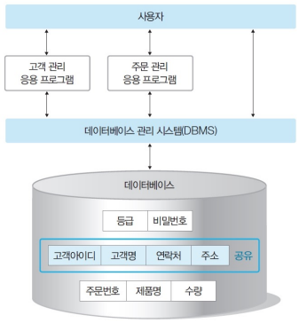
DBMS의 주요 기능¶
| 기능 | 내용 |
|---|---|
| 정의 기능 | 데이터베이스 구조 정의·수정 |
| 조작 기능 | 데이터 삽입·삭제·수정·검색 연산 수행 |
| 제어 기능 | 데이터 항상 정확·안전 유지 |
3절. 파일 시스템 vs DBMS¶
파일 시스템 vs DBMS¶
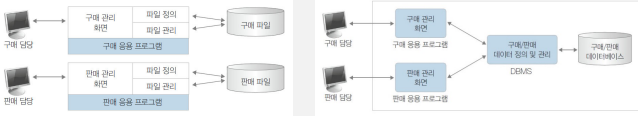
| 구분 | 파일 시스템 | DBMS |
|---|---|---|
| 데이터 정의·저장 | 데이터 정의 : 응용 프로그램 데이터 저장 : 파일 시스템 |
데이터 정의 : DBMS 데이터 저장 : 데이터베이스 |
| 데이터 접근 방법 | 응용 프로그램이 직접 접근 | 응용 프로그램이 DBMS에 파일 접근 요청 |
| 사용 언어 | Java, C, C++ 등 | Java, C, C++, SQL 등 |
| CPU / 주기억장치 | 사용 적음 | 사용 많음 |
DBMS 장점¶
| 구분 | 파일 시스템 | DBMS |
|---|---|---|
| 데이터 중복 | 데이터 파일 단위 저장으로 중복 가능 | DBMS로 데이터를 공유해서 중복 가능성 낮음 |
| 데이터 일관성 | 데이터의 중복 저장으로 일관성 결여 | 중복 제거로 데이터의 일관성 유지 |
| 데이터 독립성 | 데이터 정의·프로그램 독립성 유지 불가능 | 데이터 정의·프로그램 독립성 유지 가능 |
| 관리 | 보통 | 데이터 복구·보안·동시성 제어·데이터 관리 기능 등 수행 |
| 개발 생산성 | 나쁨 | 짧은 시간에 프로그램 개발 가능 |
| 기타 장점 | 운영체제 지원 -> 별도 소프트웨어 설치 불필요 | 데이터 무결성 유지·표준 준수 용이 |
DBMS 단점¶
| 단점 | 내용 |
|---|---|
| 높은 비용 | 1. 운영체제와 함께 설치 2. 데이터베이스 관리 시스템 설치로 구매 비용 증가 3. 동시 접속자 허용으로 제품 가격 증가 |
| 백업 및 회복 복잡 | 1. 많은 데이터 양으로 구조 복잡 2. 여러 사용자의 동시 공유로 장애 발생 시 원인 파악 불가 3. 백업 요구 |
| 중앙 집중 관리의 취약점 | 1. 모든 데이터가 데이터베이스에 통합 2. 데이터베이스 관리 시스템에 집중(한 곳에 집중) |
4절. DBMS 기능¶
데이터베이스 시스템 구성¶
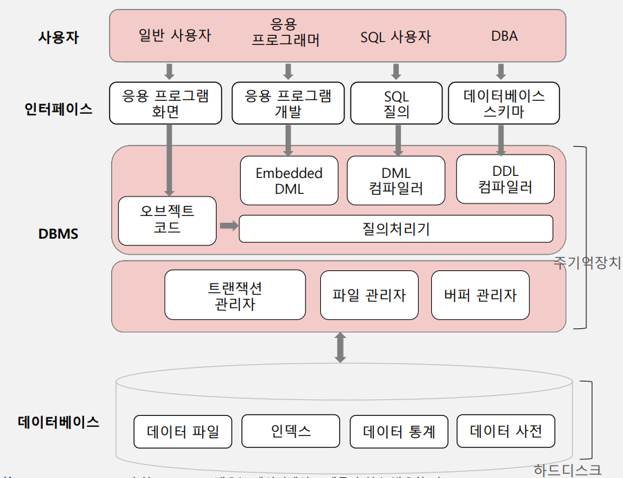
| 종류 | 특징 |
|---|---|
| 일반 사용자 | 1. 은행 창구·관공서 민원 접수처 등에서 데이터 처리 업무 진행자 2. 프로그래머의 개발 프로그램으로 데이터베이스에 접근한 일반인 |
| 응용 프로그래머 | 1. 일반 사용자가 사용하도록 프로그래밍하는 프로그래머 2. 자바·C·JSP 등 언어와 SQL로 일반 사용자를 위한 사용자 인터페이스 및 데이터를 관리하는 응용 로직 개발 |
| SQL 사용자 | 1. SQL 업무 처리 IT 부서 담당자 2. 응용 프로그램 미구현 업무를 SQL로 처리 |
| 데이터베이스 관리자(DBA, Database Administrator) | 1. 데이터베이스 운영 조직의 데이터베이스 시스템 총괄자 2. 데이터 설계·구현·유지보수 전 과정 담당 3. 데이터베이스 사용자 통제·보안·성능 모니터링·데이터 전체 파악 및 관리·데이터 이동 및 복사 등 제반 업무 수행 |
SQL¶
| 종류 | 영문 |
|---|---|
| 데이터 정의어 | DDL : Data Definition Language |
| 데이터 조작어 | DML : Data Manipulation Language |
| 데이터 제어어 | DCL : Data Control Language |
DBMS 기능¶
| 기능 | 설명 |
|---|---|
| 데이터 정의(Definition) | 데이터 구조 정의·삭제·변경 기능 수행 |
| 데이터 조작(Manipulation) | 데이터 조작 소프트웨어(응용 프로그램)가 요청하는 데이터 삽입·수정·삭제 작업 |
| 데이터 추출(Retrieval) | 사용자가 조회하는 데이터·응용 프로그램의 데이터 추출 |
| 데이터 제어(Control) | 데이터베이스 사용자 생성·모니터링 후 접근 제어 백업·회복·동시성 제어 등 기능 지원 |
5절. 데이터 모델¶
데이터 모델 종류¶
| 종류 | 비고 |
|---|---|
| 계층 데이터 모델 (Hierarchical Data Model) |
. |
| 네트워크 데이터 모델 (Network Data Model) |
. |
| 객체 데이터 모델 (Object Data Model) |
. |
| 관계 데이터 모델 (Relational Data Model) |
주 사용 모델 |
| 객체-관계 데이터 모델 (Object-Relational Data Model) |
관계 데이터 모델 장점 + 객체 데이터 모델 장점 |
1. 포인터 사용¶
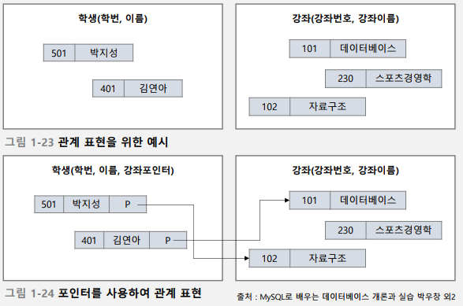 |
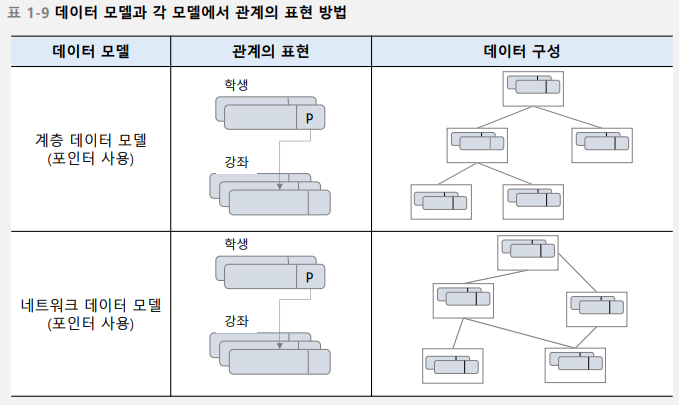 |
|---|---|
2. 속성 값 사용¶
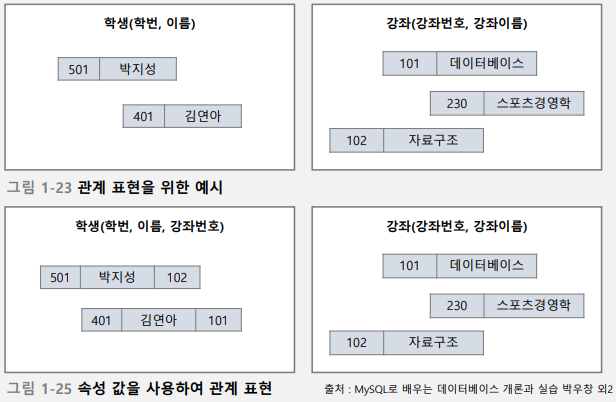 |
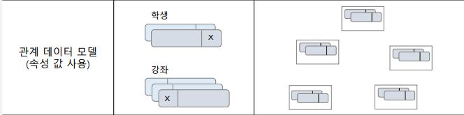 |
|---|---|
3. 객체 식별자 사용¶
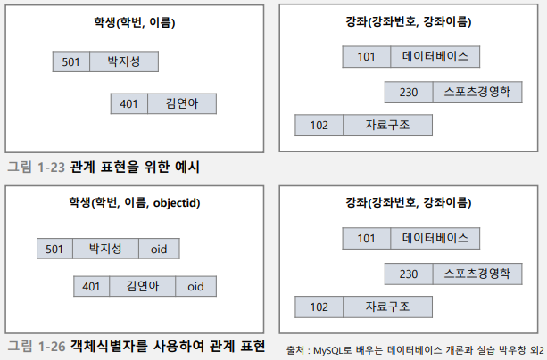 |
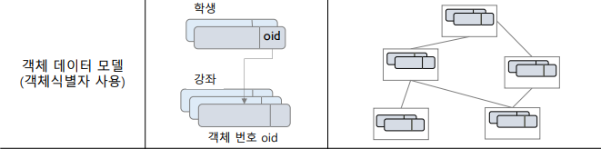 |
|---|---|
6절. 데이터베이스 관리 시스템 발전 과정¶
1세대 : 네트워크·계층 DBMS¶
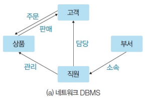 |
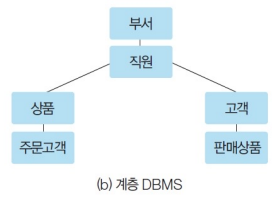 |
|---|---|
| 종류 | 설명 | 예시 |
|---|---|---|
| 네트워크 DBMS | 그래프 형태 데이터베이스 | IDS(Integrated Data Store) |
| 계층 DBMS | 트리 형태 데이터베이스 | IMS(Information Management System) |
2세대 : 관계 DBMS¶
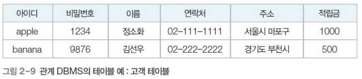
| 종류 | 설명 | 예시 |
|---|---|---|
| 관계 DBMS | 테이블 형태 데이터베이스 | 오라클(Oracle) · MSSQL 서버 · 엑세스(Access) · 인포믹스(Informix) · MySQL |
3세대 : 객체지향·객체관계 DBMS¶
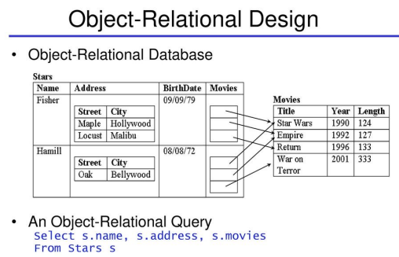
| 종류 | 설명 | 예시 |
|---|---|---|
| 객체지향 DBMS | 객체를 이용한 데이터베이스 | 오투(O2) · 온투스(ONTOS) · 젬스톤(GemStone) |
| 객체관계 DBMS | 객체지향 DBMS + 관계 DBMS | 관계 DBMS 제품들이 객체지향 기능을 지원하며 객체관계 DBMS로 분류(ex : 오라클(Oracle)) |
객체 지향 Data VS 관계 Data¶
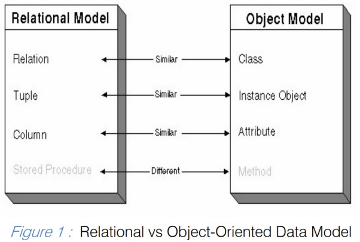 |
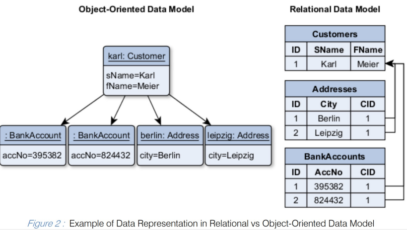 |
|---|---|
4세대 : NoSQL / NewSQL DBMS¶
| 종류 | 설명 | 예시 |
|---|---|---|
| NoSQL DBMS | 1. 비정형 데이터 처리에 적합 2. 뛰어난 확장성 3. 안정성과 일관성 유지를 위한 복잡한 기능 포기 4. 데이터 구조를 미리 결정하지 않는 유연성 5. 여러 컴퓨터에 데이터 분산·저장·처리하는 환경 |
몽고디비(MongoDB) · H베이스(HBase) · 카산드라(Cassandra) · 레디스(Redis) · 네오포제이(Neo4j) · 오리엔트DB(OrientDB) 등 |
| NewSQL DBMS | 1. 관계 DBMS의 장점 + NoSQL의 확장성·유연성 2. 정형·비정형 데이터를 신속·안정적으로 처리 |
구글 스패너(Spanner) · 볼트DB(VoltDB) · 누오DB(NuoDB) 등 |
NoSQL¶
- 뛰어난 확장성
- 여러 서버 컴퓨터에 데이터 분산·저장·처리하는 환경에서 사용
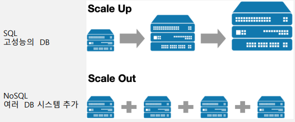
NoSQL 성능¶
| 성능 | 설명 |
|---|---|
| 유연성 | 1. 유연한 스키마 제공 2. 신속·반복적 개발 가능 3. 유연한 데이터 모델로 반정형·비정형 데이터에 이상적 |
| 확장성 | 1. 고가의 강력한 서버 추가 2. 분산형 하드웨어 클러스터로 확장 설계 3. 일부 클라우드 제공자들은 완전관리형 서비스로서 분산 운영 작업을 숨겨서 처리 |
| 고성능 | 1. 특정 데이터 모델·액세스 패턴에 최적화 2. 관계형 데이터베이스로 유사 기능을 처리할 때보다 뛰어난 성능 |
| 고기능성 | 1. 각 데이터 모델에 맞춤형으로 구축된 뛰어난 기능의 API·데이터 유형 제공 |
발전 과정¶
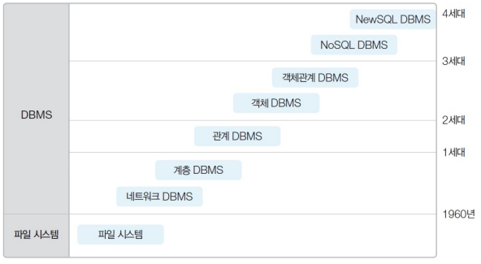